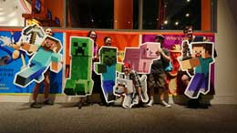

Our Team:
The team (minus Jill) poses at the Franklin Institute's Video Game Exhibit. We have no affiliation with Minecraft, but we enjoyed holding the cardboard cutouts!
Our Origin Story:
Gates of Adventure began as a project for Lily’s game design class at Drexel University in sophomore year. It started as a card game called “Over the Bridge,” with a team of only her and her partner, Trenton. Over the course of the term, they recruited nearly everyone in their shared apartment - Rory, Justin, and Allison - to playtest the game. Encouraged by the feedback from playtests, Lily and Trenton continued to work on it as a side project long after the class was over.
The old playtesters eventually found their way onto a formal role on the team: Rory and Justin as playtesters and sounding boards for design, and Allison on event planning and social media once she returned from Los Angeles the next summer. Development continued as a side project.
Then in September, the team was invited to participate as part of the Philadelphia Game Makers Guild booth in the inaugural PAX Unplugged, an offshoot of the popular PAX game convention devoted entirely to board and tabletop games. This sent the new team into overdrive to prepare the game. Jillian and Tori joined the group as new friends, and were quickly brought onto the team for their expertise in graphic design and visual arts in the run up to PAX.
With these final additions, the group incorporated as Hive Frog Studio - a callback to their collective “hive mind” beginning with Trenton and Lily’s ability to finish each other’s sentences, a power that quickly extended to the entire group. The Gates of Adventure Team continues developing the game between their classes at Drexel University and La Salle University, extracurriculars, and D&D campaigns - one based in the same fantasy world of Gates of Adventure!
Team Bios:
Lily, the Ert
Hullo, I’m Lily. I discovered a very long time ago that what I loved most was to use art to take interesting and cool ideas and bring them into this world. Like dragons. As I grew up and became a real human adult, I wanted to see if I could make this my actual adult job, so I continued to draw things. Especially dragons. My favorite color is all of them, really, but especially green, and my favorite fruit is actually all of them. I like a lot of things. As far as my role on this team, if you’re looking at it with your eyeballs, it’s probably something I made.
Trenton, Design Czar
Hey, I’m Trenton and I’m the Design Czar of the company. I come from a clan of snake people that will one day rise up and destroy Western society. My favorite color is teal, my favorite philosopher is Judith Butler, and my favorite fruit is jicama. Along with Lily, I largely design the heroes, enemies, abilities, and treasure you’ll find in the game. If something about how the game plays goes wrong, it’s probably my fault.
Justin, the One Who Breaks Things
Heyo, I’m Justin. While I tend to spend most of my time staring at my computer screen, in a dark room, while screaming to my computer and breaking my computer, I still spend a decent amount of time in a dark theatre as well as screaming to the theatre. My favorite colors are Red and Black. My favoite fruit is an orange. My favorite integer is – CARL, YOU ARE NOT AN INTEGER! STOP ACTING LIKE ONE!! My role on this team is mostly undoing all the work the Design Czar did to make the game fair. If something goes right, I probably broke it before you.
Rory, the Research Tentacle
Hello, my name is Rory! My role in the team is the Finance, Research, and Crafting Tentacle. My primary lair is beneath a fluffy blanket. My favorite color is blue, my favorite fabric is fleece, and my favorite fruit is kiwi. If it’s not directly part of the card game, I probably had my tentacle in it.
Allison, the Kerfuffle Goddess
Hai, I’m Allison, and I’m the one always on fire. When I’m not behind a notebook or backstage…I can probably be found listening to Fall Out Boy or Panic! At The Disco. My favorite color is purple, my favorite fruit is ALL THE RED GRAPES, and my favorite play is Death Trap. My role on the team is the Business (Kerfuffle) and Social Media Manager, and play-testing. If you’re reading this, it’s probably because I posted it.
Jill, the Pusher of Buttons
Hiyya! My name is Jill, and if I’m not on my couch under five fluffy blankets binging the latest TV series, I’m in the basement working on my next film. My role is creating the fun vids that come along with the game. My favorite color is… oh god I like all of them… putting me on the spot here… just not yellow. My favorite fruit is strawberry, and my (current) favorite TV show is Game of Thrones. If you’re seeing a moving picture, I was probably behind the camera.
Tori, the Unpaid Intern of So Much
Sup, I’m Tori. I’ve gone from playtester and cheerleader to Layout Artist and Associate Tentacle. When I’m not crying over illustrator or fabric, I’m in my bed watching Netflix or YouTube. My favorite color is Pantone 2039c, and my favorite fruit is strawberries, and my favorite animal is a white tiger. If you’re playing with cards, I probably screamed at them in Adobe.